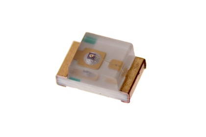
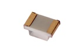

SMD (0805) Green LED - L85G

Summary
Name: SMD (0805) Green LED
ID: LEDS-0805-G-STAN-01
Hex ID: L85G
WebPage: https://github.com/oomlout/oomlout-OOMP/wiki/LEDS-0805-G-STAN-01
Short URL: http://oom.lt/L85G
Revision History: https://github.com/oomlout/oomlout-OOMP/blob/master/parts/LEDS-0805-G-STAN-01/
| Type |
Size |
Color |
Description |
Index |
LEDS
LED |
0805
SMD (0805) |
G
Green |
STAN
|
01
|
Images

About
This part is awaiting a description.
Specifications
| Info |
Value |
| Type |
LED |
| Size |
SMD (0805) |
| Color |
Green |
| Width |
2 mm |
| Height |
0.8 mm |
| Length |
1.25 mm |
| Number of Pins |
2 |
| Forward Voltage |
2.4 v |
| Forward Current |
25 mA |
Extra Details
Spotted a mistake, want to add more? Let us know oomp@oomlout.com
All images and resources are licensed [CC BY-SA] unless otherwise stated (ie. the datasheets)